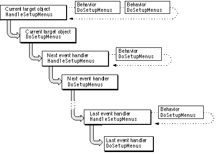
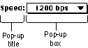
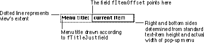

Legacy Document
Important: The information in this document is obsolete and should not be used for new development.
Important: The information in this document is obsolete and should not be used for new development.


Overview
In a Macintosh application, users activate many tasks by choosing a command from a menu. Most Macintosh applications provide at least these three standard menus: the Apple menu, the File menu, and the Edit menu. If you include the Apple menu, two more menus appear automatically on your application's menu bar: the Macintosh Menu Manager adds the Application menu, and the Help Manager adds the Help menu.With MacApp, you specify menus and menu items in your resource definition file, using two types of resources:
When your application is launched, MacApp's Menu Manager reads your
- The
'MBAR'resource type tells MacApp which menus to display in the menu bar.- The
'CMNU'resource type specifies the items in a menu and associates each item with a command number.
'MBAR'and'CMNU'resources and builds tables to store the information found in them. MacApp uses this menu data to manage your application's menus and to respond to user menu choices.MacApp provides default versions of several menus in its resource definition files, including the File and Edit menus. Your application can use MacApp's default menu resources, modify MacApp's resources, or create its own menu resources.
MacApp also provides the
TMenuViewclass and itsTTearOffMenuViewsubclass to help your application implement tear off menus.Working With Menu Resources
This section describes how to specify your application's menus using menu resources.MacApp Menu ID Constants
MacApp defines menu constants that you can use in both your code files and your resource definition files. Several of these constants are shown in Table 12-1.The
mApple,mFile, andmEditconstants are used in'MBAR' resources. ThemFirstMenuandmLastMenuconstants are used by MacApp when processing menu commands. ThemBuzzwordsconstant is the ID for a special menu that is described in "The Buzzwords 'CMNU' Resource," beginning on page 305.The Menu Bar Manager
TheTMenuBarManagerclass manages menu-bar operations and provides routines to add menu items, add help menu items, delete menu items, and make changes to the application's menu bar. The application object creates a menu-bar manager object in theIApplicationmethod. Your application can access it through the global variablegMenuBarManager.The 'MBAR' Resource
You use an'MBAR'resource to specify the menus that appear in your application's menu bar. The menu-bar resource stores a menu ID for each application menu that should appear in the menu bar. MacApp's predefined menu ID constants are shown in Table 12-1. The value of a menu ID for a menu handled by MacApp must be in the range specified bymAppleandmLastMenu(that is, from 1 to 63).The following is a typical menu-bar resource, taken from the IconEdit sample application. It includes the three standard menus--Apple, File, and Edit--as well as an Icon menu for specifying icon operations:
resource 'MBAR' (kMBarDisplayed, #if qNames "IconEdit", #endif purgeable) { {mApple; mFile; mEdit; mIcon} };The definition formIconis found in the fileIconEdit.r:
#define mIcon4MacApp defines four constants used in constructing'MBAR'resources:
For information on how to build a debug version of your application, see "Common Command-Line Options," beginning on page 678 in Appendix A.
kMBarDisplayed- You create one
'MBAR'resource with this ID. MacApp reads the resource and installs the specified menus in your application's menu bar.kMBarNotDisplayed
You can create one'MBAR'resource with this ID. MacApp reads in the resource but does not automatically display it. You can call on the menu-bar manager to change to the menu bar specified by this resource.kMBarHierarchical- You supply one
'MBAR'resource with this ID for each hierarchical menu in your application (see page 316).kMBarDebug- MacApp uses this constant to define a debug
'MBAR'resource. The Debug menu supplies menu commands for options such as turning performance monitoring on or off and displaying a window of debug flags you can modify.Defining Menu Contents With a 'CMNU' Resource
A'CMNU'resource specifies the items that appear in a menu and contains a list of attributes for each menu item. These attributes specify
Table 12-2 shows the MacApp constants that help you fill in this information.
- the item name that will appear in the menu
- the icon, if any, that should appear next to the item name in the menu
- the keyboard equivalent, if any, for the menu item
- the mark, if any, that the item may have
- the text style in which the menu item is written
- the command constant MacApp should associate with the menu item
Table 12-2 Menu item constants Constant name Effect on menu item noIconNo icon shown noKeyNo key equivalent noMarkNo mark checkMark with check plainPlain text The following
'CMNU'resource describes MacApp's default Edit menu:
resource 'CMNU' (mEdit, #if qNames "mEdit", #endif purgeable) { mEdit, textMenuProc, EnablingManagedByMacApp, enabled, "Edit", { "Undo", noIcon, "Z",noMark, plain, cUndo; "-", noIcon, noKey,noMark, plain, nocommand; "Cut", noIcon, "X",noMark, plain, cCut; "Copy", noIcon, "C",noMark, plain, cCopy; "Paste", noIcon, "V",noMark, plain, cPaste; "Clear", noIcon, noKey,noMark, plain, cClear; "Select All",noIcon, "A",noMark, plain, cSelectAll; "-", noIcon, noKey,noMark, plain, nocommand; "Show Clipboard",noIcon,noKey,noMark, plain, cShowClipboard } };In the'CMNU'description above
- Each menu item has a command number constant associated with it. For example, the Cut menu item is associated with the constant
cCut. Command-number constants always begin with a lowercasec. MacApp defines these constants in both a resource definition file (MacAppTypes.r) and a code header file (UMacAppGlobals.h). Negative numbers and positive numbers up to 999 are reserved by MacApp.When you define your own command-number constants, use the same value in both your code file and resource file; otherwise, a user menu choice may result in the wrong command being performed or in nothing happening at all.
- The two items with a hyphen instead of a command name are menu separators, which appear as dotted lines in the onscreen menu.
- To associate an icon with a menu item, you specify a resource ID constant in place of the
noIconvalue shown in the'CMNU'description. The resource ID should identify an'ICON'resource, describing an actual icon bitmap.- To associate a keyboard equivalent with a menu item, you add the key to your
'CMNU'resource. For example, the Paste command in the example usesVto indicate that Paste can be specified by pressing the Command and V keys simultaneously.- To associate a text style with a menu item, you replace the word
plainin the sample with one of the following style constants, which are defined in the fileTypes.rand also inTypes.h:
bold,italic,underline,outline,shadow,condense,extend
The Buzzwords 'CMNU' Resource
MacApp helps automate the process of implementing undoable commands by supplying text for the Undo menu item. For example, after a user performs a Paste operation, MacApp puts the words "Undo Paste" in the Edit menu. MacApp can put the word "Paste" in the menu because the Paste menu command is defined in the'CMNU'resource for the Edit menu.However, some commands that can be undone, such as drawing with the mouse, may not be listed in any menu. To display "Undo Drawing" in the menu when a drawing command can be undone, you have to inform MacApp of the name to associate with the command number for drawing. You supply this information in a
'CMNU'resource called the Buzzwords menu.The Buzzwords menu has the same format as other
'CMNU'resources, but it always has a resource ID of 128 (defined by the constantmBuzzwords) and a menu title of Buzzwords. The Buzzwords menu never appears in your application's menu bar--you use it only to supply information to MacApp.The following is the Buzzwords
'CMNU'resource from the IconEdit sample application. Note that each entry contains a buzzword phrase and a command-number constant. For example, the word "Drawing" is associated with the constantcDrawCommand. This tells MacApp to show the menu phrase "Undo Drawing" for a drawing command.
resource 'CMNU' (mBuzzwords) { mBuzzwords, textMenuProc, allEnabled, enabled, "Buzzwords", { "Page Setup Change", noIcon, noKey, noMark, plain, cChangePrinterStyle; "Drawing", noIcon, noKey, noMark, plain, cDrawCommand; "Set Color", noIcon, noKey, noMark, plain, cSetColor } };Enabling and Disabling Menu Items
If a menu command is currently available, the menu item for that choice should be enabled. If a menu command is not currently available, the menu item should be disabled and its text dimmed. For example, if nothing in the active view is selected, the Cut command on the Edit menu is normally disabled and its text is dimmed.MacApp calls
gApplication->SetupTheMenuswhenever the status of menu items might need to be updated, including when the user clicks in the menu bar or when a key event is received. TheSetupTheMenusmethod first disables each menu item on each menu MacApp manages (the Apple menu is managed by the system), then calls theHandleSetupMenusmethod of the current target object.The
HandleSetupMenusmethod causes theDoSetupMenusmethod to be called for each behavior object and event handler in the target chain, giving each object a chance to enable the menu items it can handle. When this process is finished, only those menu items that can be handled by objects in the current target chain are enabled.Figure 12-1 shows how event-handler objects and behavior objects in the target chain enable menu items.
Figure 12-1 Enabling menu items

The
DoSetupMenusmethod is inherited by classes that descend from theTEventHandlerclass and by classes that descend from theTBehaviorclass. When you define a class that descends from one of these classes, you override theDoSetupMenusmethod to enable the menu items your class can handle.You enable a specific menu item by calling the
Enableroutine and passing the command constant associated with the menu item. For example:
void TYourClass::DoSetupMenus() { Inherited::DoSetupMenus(); Enable(cMyCommand, TRUE); }TheEnableroutine is used to enable or disable the menu item with the specified command number. You can also enable menu items with theEnableCheckroutine, which enables the item and adds a checkmark next to it.
To enable menu items with a behavior object, you define a subclass of
- Note
- You don't normally need to disable menu items in a
DoSetupMenusmethod, because MacApp disables all items before callingDoSetupMenus.
TBehaviorand override theDoSetupMenusmethod. Your application creates an instance of the new behavior class and associates it with an event-handler object by calling theAddBehaviormethod of the event handler. You also override methods such asDoMenuCommandorDoKeyEventin your behavior class to handle the menu choices you have enabled.Processing a Menu Choice
Once you have defined menu resources to describe your application's menus, MacApp takes care of displaying the menus and dispatching user menu choices.When a user chooses a menu command, MacApp calls the
HandleMenuCommandmethod of the current target object, passing the command number associated with the menu choice. If the target object or a behavior object attached to it can't handle the choice, it passes it on to the next object in the target chain. If no object in the target chain handles the menu choice, it is ignored. This process is shown in Figure 5-4 on page 110.You use event-handler objects and behavior objects to respond to menu choices. These classes are described in Chapter 5, "Events and Commands."
Certain objects in an application typically handle specific menu commands:
- The application object handles the About command, as well as the New, Open, and Quit commands in the File menu. In debug versions, the application object also handles performance monitor commands and debug menu commands.
- The Clipboard manager object handles the Show Clipboard and Hide Clipboard commands.
- Document objects handle the Save, Save As, Save a Copy, and Revert to Saved commands in the file menu. A
TEditionDocumentobject knows how to handle Create Publisher, Subscribe to, Publisher Options, Subscriber Options, Show Borders, Hide Borders, and Stop All Editions commands.- For applications that support AppleTalk mailers, a letter (based on the
TLetterorTFileBasedLetterclass) works with the document object (based onTMailableDocument) to handle the Mail menu commands Add Mailer, Send, Reply, and Forward. The application object (based on theTMailingApplicationclass) handles Open Next Letter.- Window objects usually handle the Close command, but in certain circumstances the application object can close the frontmost window.
- View objects typically handle commands that modify the display of information on the screen, such as Cut, Copy, Clear, Paste, and Select All.
- The
TStdPrintHandlerbehavior object handles the Print, Print One, Page Setup, and Show Page Breaks commands from the File menu.- Any command-handler object, working together with the application object, can handle the Undo menu command.
Changing Menus From Your Application
MacApp provides routines to change the appearance of menus while your application is running:
You can read about these routines in the MacApp Class and Method Reference.
SetCommandName- The
SetCommandNameroutine changes a menu item's text.SetStyle- The
SetStyleroutine changes a menu item's font style.SetCommandIcon- The
SetCommandIconroutine displays a menu item icon.EnableCheck- The
EnableCheckroutine checks or unchecks a menu item, and also enables or disables it.Working With Pop-Up Menus
Pop-up menus are useful for presenting a list of choices. For example, you might use a pop-up menu to set the baud rate in a modem-setup dialog box or to choose the line spacing in a word-processing program.A pop-up menu appears as a rectangle with a 1-pixel border and a 1-pixel drop shadow. Pop-up menus are identified by a downward-pointing triangle that appears in the pop-up box. The title of the pop-up menu appears next to the pop-up box. Figure 12-2 shows a simple pop-up menu.
Figure 12-2 Simple pop-up menu

To open a pop-up menu, the user presses the mouse button while the cursor is over the pop-up title or pop-up box. The menu "pops up," displaying the items in the menu with the current item highlighted. As the user drags the cursor through the menu, the item under the cursor is highlighted. When the user releases the mouse button, the highlighted item becomes the current item.
Figure 12-3 shows a pop-up menu in its closed and open states. You can read more about pop-up menus in Inside Macintosh: Macintosh Toolbox Essentials and in the Macintosh Human Interface Guidelines.
The TPopup Class
You implement a pop-up menu with the MacApp classTPopupor with a subclass you define. TheTPopupclass is a subclass ofTControl, which is in turn a descendant ofTView. TheTPopupclass defines these fields:
Figure 12-4 shows how a pop-up menu view is drawn. When a
fStrListID/fIndexSpecifies the pop-up menu's title in a string resource list ('STR#').fMenuID- Specifies a resource ID of a
'MENU'or'CMNU'resource for the pop-up menu.fCurrentItem- Specifies the currently chosen menu item.
fItemOffset- Stores the width of the pop-up title area (from the left edge of the view to the pop-up menu view).
TPopupobject is created, its pop-up menu view is initialized and installed in the specified superview. The menu title is drawn starting atfItemOffset, using the justification specified by thefTitleJustfield (the default is left justified). The pop-up selector is drawn to the right offItemOffset, with its width and height determined by the menu dimensions.Figure 12-4 A pop-up menu view

Responding to a User Menu Choice
When a user clicks a pop-up menu, a mouse-down event is sent to the window containing the view. TheDoMouseCommandmethod of theTCtlMgrancestor ofTPopuptracks the mouse by calling the Toolbox routineTrackControl. If the user selects an item in the pop-up menu,DoMouseCommandsets the pop-up'sfLongValfield to the number of the selected menu item, then callsHandleEvent, passing an event constant. This results in a call to the pop-up'sDoEventmethod.The event constant passed to
HandleEventcomes from the pop-up'sfEventNumberfield (defined in theTCtlMgrparent class ofTPopup). For a pop-up menu, it defaults tomPopupHit. TheTPopupclass doesn't overrideDoEvent, so to respond to a user menu choice, you can either define a subclass ofTPopupand override theDoEventmethod, or overrideDoEventin the view class of the pop-up's superview.For example, for a pop-up menu displayed in a dialog view, you can override the
DoEventmethod of the dialog view, as shown in the following code sample:
void TTestDialogView::DoEvent(EventNumbereventNumber, TEventHandler*source, TEvent* event) // Override. { // If the event concerns our pop-up menu... if((eventNumber == mPopupHit) && (source == fMyPopup)) { // Get the command number associated with the selected // pop-up menu item. aCommandNumber = ((TPopup*)source)->GetCurrentCommand(); switch (aCommandNumber) { // If it's a command number we're interested in, process it. case cMyCommand: // Code to respond to the command constant. . . . } // End switch. } break; } // TTestDialogView::DoEventTheGetCurrentCommandmethod callsCommandFromMenuItemto get a command number for the chosen pop-up menu item. If you have defined your pop-up menu with a'CMNU'resource, as described on page 303, you can associate command constants with pop-up menu items, just as you would with items on a standard menu.